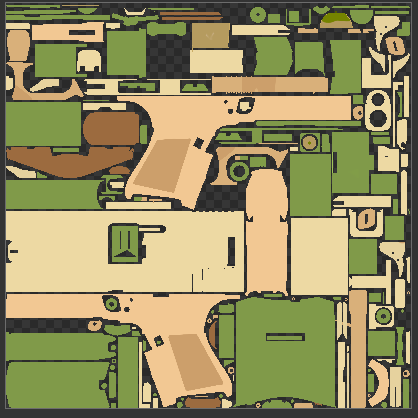
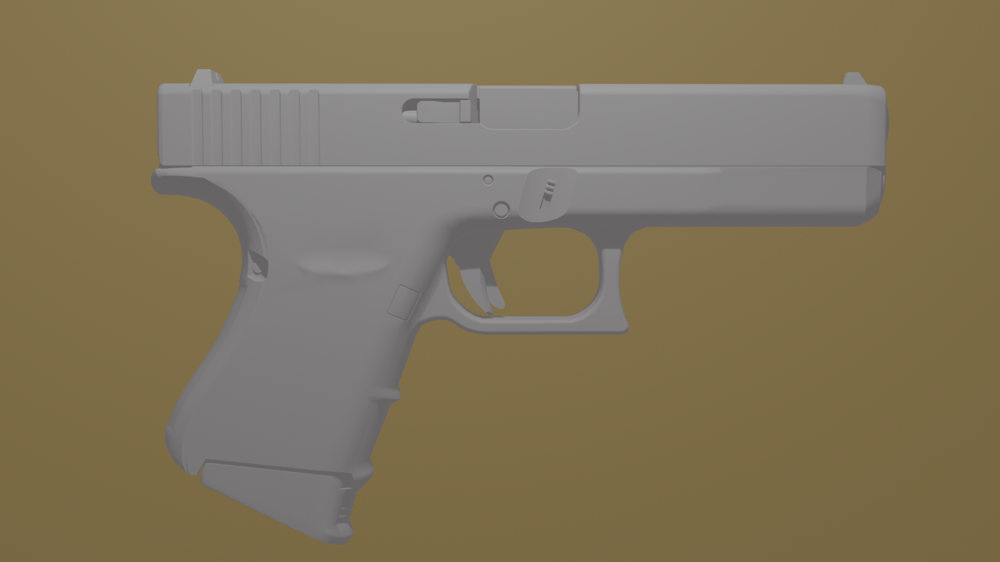

La création du projet
De la texture de base jusqu'aux détails en relief, voici les grandes étapes de fabrication du skin.
1. Préparation du modèle et des UV
Prise en main du modèle du Glock et repérage des UV pour savoir où peindre chaque partie. séparation du glock en plein de morceaux important.
2. Peinture des couleurs de base
Pose du chocolat blanc sur le corps, puis des éclats de pistache répartis comme dans une vraie glace.
3. Détails en relief
Travail du bump map pour creuser et faire ressortir certains détails sans toucher au maillage.
4. Mise en scène et rendu
l'animation, cadrage mouvement du glock l'eau le décors plus l'éclairage et rendu final pour mettre le skin en valeur.
Voici l'évolution du skin ont commence avec seulement un mesh sans le modifier ont joue avec la texture pour crée un skin.

